Рептилії, як домашні улюбленці з кожним роком стають все популярнішими.
Цьому сприяє відносна простота утримання:
- 1. рептилії не вимагають багато уваги;
- 2. підходять алергікам;
- 3. не займають багато місця;
- 4. не вимагають високих витрат;
- 5. за ними цікаво спостерігати.
Як домашнього вихованця можна вибрати як екзотичну тварину, так і просту прудку ящірку. Умови утримання приблизно однакові, тільки з тією різницею, що звичайна ящірка в дикій природі впадає в сплячку, і для підтримки нормальної життєдіяльності їй необхідно забезпечити таку можливість і в домашніх умовах.
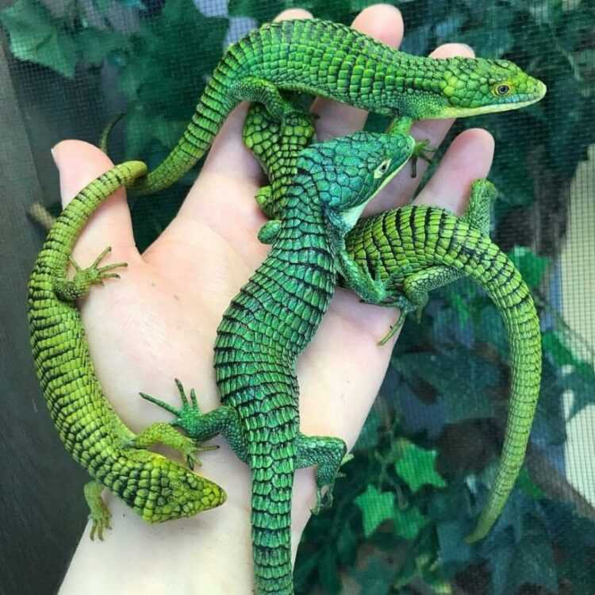Давайте спочатку розглянемо, як приклад, простого в утриманні і недорогого вихованця, звичайну прудку ящірку. Ця рептилія широко поширена в дикій природі, добре вивчена, має цікаву зовнішність, за належної організації умов утримання відмінно адаптується до квартирних умов. Але мінімальне обладнання все ж таки необхідне.
Чому не можна утримувати ящірок поза тераріумом?
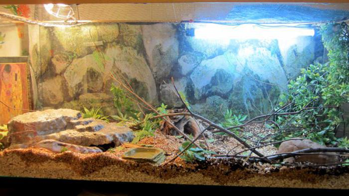По-перше, рептиліям, навіть звичайним ящіркам, необхідний свій мікроклімат, з двома зонами: теплішою і прохолоднішою і обов'язковим джерелом ультрафіолету. По-друге, для емоційного комфорту у тварини має бути своє укриття. По-третє, перебування в квартирі загрожує травмами, які можуть призвести до загибелі тварини.
Організація житлової зони для ящірки не вимагає великих матеріальних і тимчасових витрат, а окупиться особливою атмосферою в квартирі, здоровим і задоволеним вихованцем та величезним почуттям задоволення: ви знатимете, що зробили все правильно і вашій тварині живеться добре.
Що потрібно для утримання звичайної ящірки в домашніх умовах?
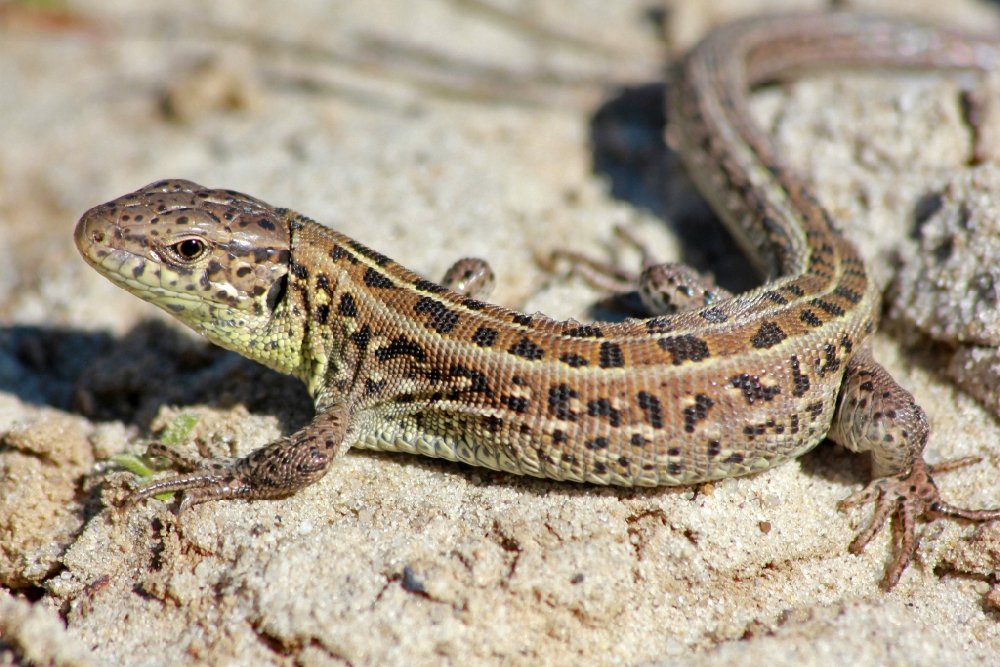Звичайні дорослі ящірки мають розмір від 15 до 25 см, тому для їх утримання досить невеликого (400х600х400 мм) тераріуму. Врахуйте, що основні вороги ящірок у дикій природі – хижі птахи, тому тварини зазнають стресу, якщо помічають рух зверху. Тому дверцята житла ящірки мають бути збоку, а не зверху.
Пам'ятайте, що утримувати ящірок поза тераріумом, у коробках не можна!
Необхідний мінімум обладнання тераріуму для ящірки звичайної це:
- 1. ультрафіолетова лампа;
- 2. ґрунт на дні акваріума;
- 3. ємність із водою.
Особливу увагу при організації житла необхідно приділити температурі повітря. Бажано організувати в тераріумі дві зони з різницею температур приблизно в 10 градусів. У холодній зоні має бути 25°С, у теплій – 35°С. Ультрафіолетова лампа повинна працювати 12 годин щодня, це життєво важливо для рептилій, інакше у них в організмі порушуються обмінні процеси та тварини вмирають у муках.
Навіть уночі температура повітря не повинна опускатися нижче 20 градусів, інакше у ящірки починають сповільнюватися метаболістичні процеси, трохи пізніше ви зрозумієте чому.
Крім ламп, для підігріву тераріуму можна використовувати також термокаміння, термокилимки та термошнурки. Головне, стежити, щоб температура цих пристроїв була не надто високою.
Спеціальний ґрунт на дно краще купити в зоомагазині. Там він має оптимальний склад, очищений та пристосований спеціально для рептилій.
Ємність з водою повинна мати розмір рівний або більший розміру ящірки, щоб вона могла забиратися в неї. Вода має бути в холодній зоні. Додатково можна кілька разів на день обприскувати ґрунт водою, але не дуже рясно, інакше в ньому може розвинутися грибок.
Чим годувати прудку ящірку?
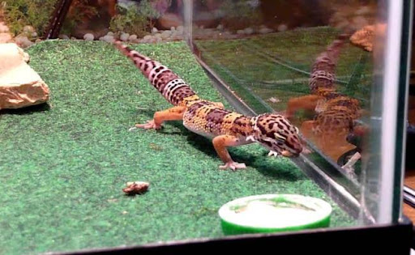У дикій природі ящірки харчуються жуками, павуками, кониками, гусеницями та дощовими хробаками. Подбайте про те, щоб у меню вихованця обов'язково була жива їжа. Це можуть бути цвіркуни, таргани, борошняні черв'яки.
Зрідка можна давати і яйце, сиру яловичину чи варену курку.
З досвідом ви підберете оптимальний розмір шматочків, щоб тварина трохи попрацювала, приймаючи їжу, але без надмірних зусиль. Якщо шматки надто великі ящірки їх випльовую і заковтують знову.
До меню обов'язково додавайте спеціальні мінеральні добавки та вітаміни. Годують ящірок щодня: 3 рази на день влітку та двічі на день узимку. Один прийом їжі – це 7-12 комах. Молоднякові краще давати їжу пінцетом, а дорослі ящірки можуть брати їжу самостійно.
Все, що ящірка не з'їла, потрібно прибрати з тераріуму.
На сьогоднішній день виробники зоотоварів пропонують широкий вибір готових кормів для ящірок: починаючи від багатокомпонентних сумішей до сушених комах. Ознайомитись та підібрати оптимальний варіант корму можна у нашому інтернет-магазині.
Чи впадають ящірки в домашніх умовах у сплячку?
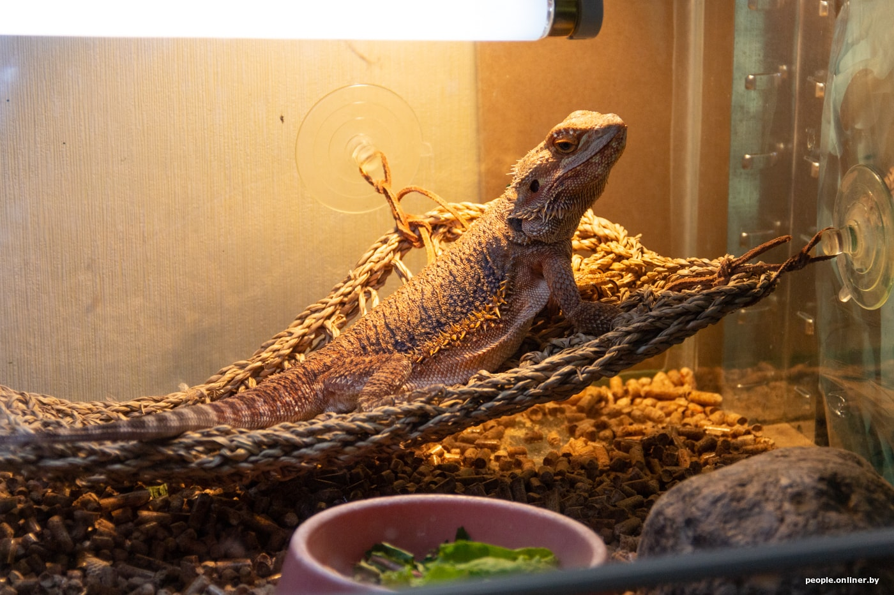У дикій природі, через особливості клімату, ящірки щороку в холодну пору впадають у сплячку. Виникає цілком логічне запитання: чи їм це потрібно в міській квартирі?
Скажімо відразу: сама по собі ящірка не засне, якщо ви не зміните температуру утримання. Краще створити необхідні для зимової сплячки умови,тому що тварини, які дотримуються звичайного сезонного циклу, краще почуваються, краще виглядають (колір шкіри більш насичений) і довше живуть.
Як правильно вводити в сплячку домашню ящірку звичайну?
Процес підготовки до сплячки триває приблизно місяць. Якщо ящірка худа, треба почати годувати її інтенсивніше, щоб до початку сплячки вона набрала вагу. Потім потрібно поступово знижувати температуру (за тиждень до цього тварину перестають годувати, щоб у неї повністю очистився кишківник).
Зниження температури має відбуватися плавно: кожні 3-6 годин необхідно знижувати температуру на 5 градусів, поки не досягнемо позначки + 6-8°С. Це оптимальний температурний режим для юркої ящірки.
Зимувати рептилія може у холодильнику з регульованою температурою, яку необхідно постійно контролювати. Тварину треба помістити в невелику ємність з отворами та поставити у холодильник.
Сон рептилії настільки глибокий, що серцебиття практично не відчувається і дихання дуже рідке. Але тварина жива, вона просто дуже міцно спить! Деякі власники ящірок вирішували, що рептилія померла та викидали тварину.
Оптимальна тривалість сну ящірки – 2, 3 місяці. Менше цього періоду сон не дає бажаного ефекту, більше – у рептилії можуть закінчитися резерви корисних речовин та енергії, і вона помре уві сні.
Процес трохи клопіткий, але, по-своєму, цікавий. Пам'ятайте, що від вас залежить життя та здоров'я милої маленької істоти, підходьте до догляду за рептилією відповідально!
Екзотичні ящірки – особливості характеру та догляду.
Якщо прудка ящірка практично не звикає до людини і погано йде на контакт, деякі види екзотичних рептилій досить доброзичливі і позитивно ставляться до контакту з людиною.
Наприклад, еублефари - спокійні та доброзичливі вихованці, дуже добре відносяться до дітей. Їх часто порівнюють з кошенятами, оскільки вони можуть засипати на руках у господарів. Незвичайне забарвлення та милий вигляд також додає їм цінності як домашніх вихованців.
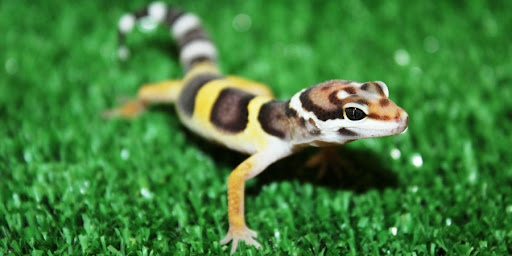Еублефари були б ідеальними вихованцями, якби не вели нічний спосіб життя. Через це власники пропускають більшість найцікавіших моментів із життя улюбленця.
Гемітеконікси відрізняються дуже симпатичним забарвленням – поєднання теплих та холодних відтінків (сірого, коричневого, помаранчевого, жовтого, чорного та білого), незвичайні градації та переходи, плюс гарний візерунок – ця рептилія дуже гарна!
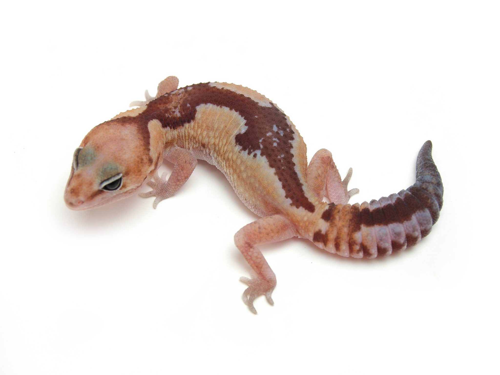Сімейство геконів, до якого належать гемітеконікси надзвичайно різноманітне. Розмір дорослих особин коливається від 18 до 36 см завдовжки. У них дуже цікавий хвіст: товстий, складений у гармошку. У моменти небезпеки тварина може його розкочувати, щоб здаватися більше.
Хвіст у цих рептилій – індикатор здоров'я: якщо він худий, без жирових відкладень, то тварина хвора чи голодує. У моменти небезпеки, як і більшість ящірок, гемітеконікси можуть його відкидати. На жаль, потім він уже ніколи не зможе вирости до початкового розміру, і зовнішність рептилії багато втратить. Тому в домашніх умовах треба бути дуже обережним із гемітеконіксом і завжди пам'ятати про цю особливість.
Годують цих ящірок тричі на тиждень: цвіркуни, борошняні черв'яки, таргани, новонароджені мишенята та обов'язково спеціальні корми для рептилій з вітамінами та кальцієм.
Розмір житла для вихованця підбирається відповідно до розмірів, але не менше 70 л. На відміну від звичайної ящірки, ця рептилія потребує дещо більшої кількості укриттів: корчі, половинки кокосу, кора дерев. На дні ємності повинен бути мох або звичайна ганчірка, але не пісок: тварина може наковтатися його під час їжі та захворіти! Теплота (дві зони з різною температурою), вологість та відмінна вентиляція – стандартний набір для всіх рептилій та гемітеконікс не виняток.
Фельмузи також дуже різноманітні у розмірах та забарвленнях, рід фельмуз налічує 42 види (66 підвидів). Дорослі ящірки мають приблизно такі самі розміри, як і гемітеконікси (18-30 см).
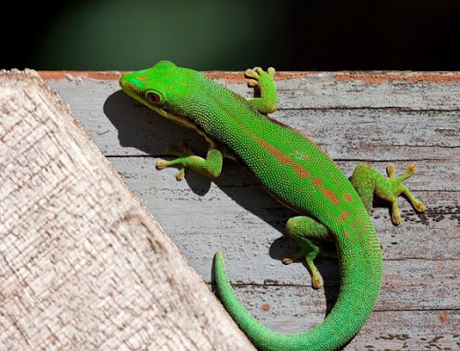Яскраве забарвлення притаманне майже всім представникам виду. Найчастіше це різноманітні відтінки зеленого кольору, на спинці бувають плями та смужки.
З особливостей утримання необхідно виділити обов'язкову наявність у тераріумі зелених рослин, які висаджуються у мокрий ґрунт. В оформленні тераріуму необхідно використовувати порожнисті трубки, наприклад, бамбук, які будуть для рептилії укриттям. Годують фельмуз двічі на тиждень комахами та один раз на тиждень фруктами. Важливо не перегодовувати рептилій: ожиріння печінки може призвести до дуже сумних наслідків.
Гекони токі мають особливе забарвлення «в горошок» і, на відміну від більшості ящірок, досить голосні. Вони можуть видавати велику кількість звуків: квакання, клацання, попискування або цвірінькання. Слід враховувати цю особливість, тим паче у тому, що це нічні тварини. Щоправда, голос є лише у самців, самки мовчать.
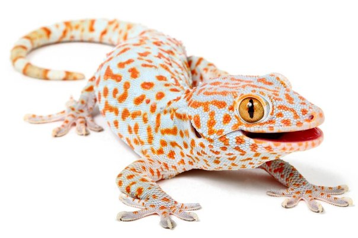Токі досить агресивні, у них міцні щелепи, здатні завдати значних ушкоджень, тому краще їм не набридати. З особливостей утримання варто відзначити трохи більший розмір житла та більш високу вологість (70-80%). У тераріумі необхідно висадити рослини, які сприяють підтримці вологості (наприклад, сциндапсус, біложилкова маранта, карликовий повзучий фікус та різні філодендрони).
Оптимальний корм для токі – цвіркуни, можна давати також борошняних хробаків та тарганів. Не часто, як ласощі, раціон доповнюють новонародженими мишенятами та перепелиними яйцями.
Бананоїди, на відміну токі, досить доброзичливі, спокійно переносять перебування на руках. Годувати цих рептилій можна як живими комахами, так і спеціальними кормами. У меню також необхідно включати фрукти, вітаміни та кальцій.
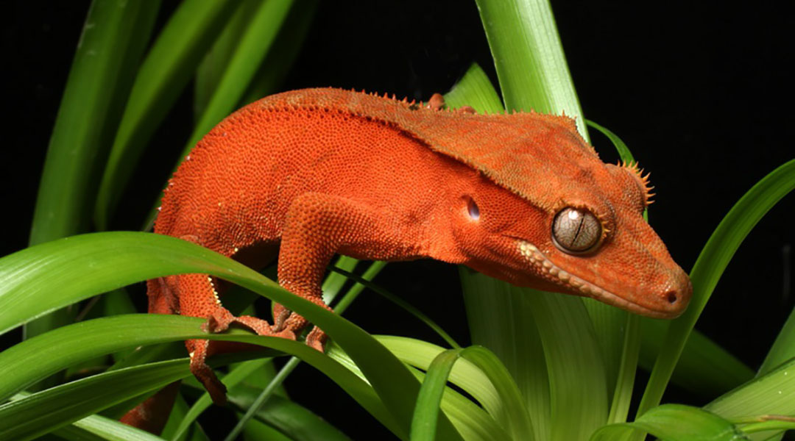Температура в тераріумі повинна бути 24-28 °С вдень і 22 градуси вночі. Як підстилку на дно краще використовувати натуральний мох, кору, які добре підтримують вологість. Обов'язково мають бути живі чи штучні рослини, які ці рептилії використовують як укриття. Вологість довкілля бананоїду досить висока, 60-90%.
Хамелеон віддає перевагу теплішим умовам утримання, температура в тераріумі для такого вихованця повинна бути від 28 до 32 градусів вдень і 25°С вночі. А ось велика вологість не потрібна, достатньо буде 60%.
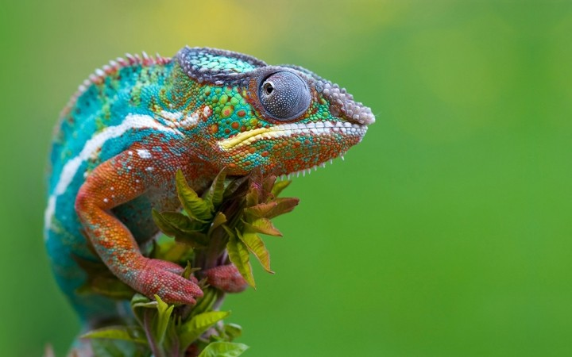Дно житла вистилають шаром піску, вермікуліту або сфагнуму. Обов'язковим є наявність зелених рослин. Харчування у хамелеону має бути досить різноманітним: комахи, новонароджені мишенята, овочі, фрукти. Обов'язкове додавання до раціону спеціальної вітамінно-мінеральної суміші.
Основна відмінність екзотичних ящірок у тому, що вони не впадають у сплячку, як звичайна ящірка та мають різні розміри. Вибираючи тераріум необхідно це враховувати, а також те, що антураж такого житла має бути дещо іншим, відповідати зовнішності вихованця та його довкілля. Щодо температурних режимів великої корекції не потрібно.
Утримання будь-якої тварини вимагає обдуманого відповідального підходу, тому, обираючи собі холоднокровного друга, вивчіть глибше його особливості, тоді ваше спілкування буде продуктивнішим і подарує величезне задоволення!